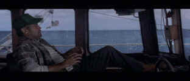

| Perfect Storm (SE)/B,A- |
| Warner/2000/130/ANA 2.35 |
A charismatic star often brings a film to another level. The star of The Perfect Storm is the storm, and while the weather performance is incredible, I found the title character wanting in that special department.
The greatest tribute I can make for The Perfect Storm is that despite far too many quibbles with plot execution and character development, I was engaged by the storm. The visual and sonic power was overwhelming. I was awestruck by the enormous challenge the actors must have faced facing the stage thrown water and the messianic motions of the enormous mechanical gimbal that threw
the full scale Andrea Gail to and fro in the giant Warner pond. The storm interaction with the Andrea Gail in the largest indoor tank ever built is thoroughly spectacular and it blends seamlessly with the blue screen effects of calm and violent seas.
 |
| Clooney at the helm in calm waters. ©Warner |
The Perfect Storm is one of those Gloucester seagoing stories, about the men and families who for centuries have been bringing fish to the tables of America. The difference is that this is a film based on a book that chronicled a true tale. The events depicted in The Perfect Storm purport to substantially conform to the facts, but no one really knows exactly what went
on the fateful trip of the Andrea Gail.
Director Wolfgang Petersen's film concentrates more on the voyage than on than on the characters. Do you ever get to know the characters? That's questionable. You do get an idea of what drives their lives and how the history of Gloucester impacts itself on the community. The Perfect Storm never quite sings for me. There's a moment of male bonding when the men of the Andrea Gail get the word "Let's go
fishing," when the film takes on an energy lacking from every other scene. That the film survives this kind of character involvement is a tribute to the water work. But water work and dialogue are like oil and vinegar, they need a perfect mix with some added spice to be understood. Much of the dialogue is understandably overpowered by the roar of the raging ocean. It adds a level of reality. I mean, in the middle of a storm, much
less a perfect storm, you likely only heart every fourth word anyway. The crew of the movie Andrea Gail needed a course in sign language to communicate with any consistency.
Wolfgang Petersen's cutting makes for some tough movie navigation. Many of the water cuts between parallel plot lines are abrupt and defuse the tension, while it's obvious Petersen is attempting to do just the opposite.
George Clooney plays Captain Billy Tyne, captain of the Andrea Gail. Clooney is solid and looks the part, but I felt a lack of fire. In his one poetic speech delivered to fellow captain Linda Greenlaw I didn't believe a word he said. Maybe it was the material he had to pilot through tough waters, but give me the George Clooney of Out of Sight or Three Kings any day. Mark Wahlberg, on the other hand, is quite believable as crew member Bobby Shatford. The other crew members give solid performances, including John C. Reilly and William Fichtner. John Hawkes has some especially nice scenes in the local bar. The attempt at romance fails mostly flat. Beautiful Diane Ladd plays plain as Shatford's love, and Mary Elizabeth Mastrantonio
is appealing as Captain Greenlaw, but really has little to do save one rather anti-climatic church memorial.
Personally, accurate or not, I hated the weather station scenes. They rang as hollow as a stuffed swordfish and hung about the picture like an albatross. Ironically, the weather scenes could have provided a dramatic push to The Perfect Storm done with style and proper pacing. The director missed the forecast on this one.
Some of the character interaction is forced. Does the level of difficulty in filling a crew of five force Captain Billy Tyne to add a man who clearly will be a problem? Now, I don't know the facts, but it seems ignorant or dramatically necessary to fill a crew in this manner. Catch the The Perfect Storm for the magnificent storm sequences and let the characterizations roll with the waves.
There is lots of difficult transfer material in The Perfect Storm, but it's delivered virtually perfectly. The many dark, grayish, storm sequences, extract excellent contrast from the raw material. The image is sharp throughout with small details clean and discernible. Color is lively and accurate int he brighter outdoor sequences. Fleshtones have a natural and wide range. The Dolby Digital 5:1 surround is
powerful and active. Water effects turn the home theater into a simulated storm setting. The music balance of James Horner's score is outstanding. Dialogue, as mentioned before, is sometimes difficult, but story line is not lost.
DVD Menus are getting as long as short films, or so it seems when waiting to access a feature or even just beginning the film. Wouldn't it be nice if a simple click of a button by-passed much of the unnecessary navigation time.
Packaged by Warner as a special edition, there are a number of excellent features. Three, count 'em, three audio commentaries provide a very complete view of the making of The Perfect Storm. Wolfgang Petersen is joined by DVD producer J.M. Kenny on one commentary track and Kenny, who also produced the SE of Mall Rats, keeps Petersen stimulated throughout the film. This is the best way to do a
commentary. It keeps commentary focused and on track and provides insights from another point of view. Visual effects is covered on another commentary by effects producer Steen Fangmeier and Helen Ostenberg Elswit and and author Sebastian Junger provides his observations on yet a third commentary. A short piece featuring composer James Horner breezes over the creating of the score. Another short feature has interviews with
witnesses to the 1991 storm. There are storyboards, a photo montage, conceptual art and a behind the scenes documentary. The Perfect Storm is an outstanding fully packed special edition DVD.
|
|

Click on the DVD MIA symbol for profiles of DVDs missing in action.
Add films to the DVD MIA Master List by filling out a simple form. Click Here

The Feature Archive has articles ranging from Akira Kurosawa to Blonde Bimbos and John Ford.
Redeeming the Writer:
A Conversation with Frank Darabont

DVDPlanet is the DVD incarnation of legendary laser retailer Ken Crane's. Deep discounts and serious service.
 Brad Lang continues to add more interesting to the extensive collection at Classic Movies. Everything from actors and actress to your favorite directors is linked at the site. Brad Lang continues to add more interesting to the extensive collection at Classic Movies. Everything from actors and actress to your favorite directors is linked at the site.

News, information, features about current films in theaters and in the pipeline. Easy to use interface.
 
The Big Combo has style to spare in reviewing films and producing feature articles. Check out their special "Lingo" section.

First Run Features boasts a library of independent and foreign features available on DVD and VHS. Check out their web site for catalog details.

DVD Demystified makes it all clear.The official Internet DVD FAQ for the rec.video.dvd Usenet newsgroups.

Reviews of affordable remote controls in the market place. Codes and tips as well.

Ask Digital Man is the web's only 24-hour, totally FREE source for all your home theater, DVD, Dreamcast, PC, and Networking tech support needs!

The Movie Poster Archive includes extensive poster images from the films of stars like Susan Hayward, Kirk Douglas, Katharine Hepburn and many more. Our featured star is Frank Sinatra.
|